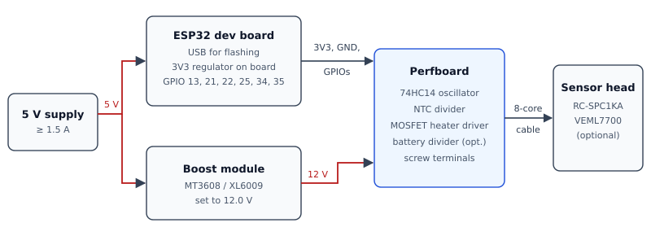

Build the rain sensor from off-the-shelf modules on perfboard, without the custom PCB. The pinout matches the Rev A board, so the firmware runs unchanged.

| Qty | Part | Notes |
|---|---|---|
| 1 | ESP32 dev board (ESP32-WROOM-32, 30 or 38 pin) | GPIO 13, 21, 22, 25, 34, 35 must be broken out. On-board 3.3 V regulator and USB. |
| 1 | RC-SPC1KA rain sensor (Radiocontrolli) | Capacitor, heater and NTC on one element. See README for sources. |
| 1 | SN74HC14N, DIP-14, with socket | Hex Schmitt-trigger inverter. Use the HC type at 3.3 V. |
| 1 | Resistor 220 kΩ (R1) | Oscillator. |
| 2 | Resistor 5.6 kΩ (R2), in parallel | Gives 2.8 kΩ NTC pull-up. A single 2.7 kΩ also works. |
| 1 | Resistor 100 Ω (R3) | MOSFET gate resistor. |
| 1 | Resistor 100 kΩ (R4) | Gate pull-down: heater stays off while the ESP32 boots. |
| 2 | Ceramic capacitor 100 nF (C1, C2) | 74HC14 decoupling, NTC filter. |
| 1 | Boost converter module MT3608 or XL6009 | 5 V in, adjusted to 12.0 V out. The heater draws about 0.3 A at 12 V. |
| 1 | Logic-level N-MOSFET | IRLZ44N (TO-220), AO3400A on an adapter, or a ready-made AOD4184 (D4184) module. Not IRF520 modules: they need about 10 V at the gate. |
| 1 | 5 V power supply, 1.5 A or more | Feeds the ESP32 and the boost module. |
| 1 | Perfboard, about 50 × 70 mm | Plus screw terminals (sensor, power), pin headers or sockets for the dev board. |
| Qty | Part | Notes |
|---|---|---|
| 1 | VEML7700 light sensor module (I2C 0x10) | Day/night for the dew logic. Sits in the sensor head. |
| 1 | HTU21D module (GY-21, I2C 0x40) | Temperature and humidity inside the enclosure (battery climate, desiccant check). |
| 2 | Resistor 100 kΩ (R5, R6) | Battery voltage divider for 1S Li-ion (up to 4.2 V). |
| 2 | Resistor 4.7 kΩ | I2C pull-ups, only if none of your I2C modules has them. Most have. |
| 1 | Outdoor cable, 8 cores | To the sensor head: 5 sensor lines plus 3 for the VEML7700 (GND shared). |
| 1 | IP67 enclosure, desiccant, cable glands | For the electronics. Sensor holder STL: mechanical/ in the repository. |
Soldering iron and solder, multimeter, small screwdriver for the boost potentiometer, wire stripper, heat shrink. For mounting the sensor: neutral-curing adhesive (MS polymer) and Kapton tape.
Four small blocks, all referenced to a common ground. Labels such as GPIO25 connect to the ESP32 pin of the same name.
The sensor capacitor and R1 form a relaxation oscillator with one Schmitt-trigger inverter. A wetter surface means more capacitance and a lower frequency. The ESP32 counts the pulses in hardware (PCNT). The firmware computes the capacitance from the ratio to the dry frequency, so R1 and the cable drop out of the result.
Boost modules without an enable pin run permanently. Fine on mains power; for battery operation the Rev A board is the better choice, as it switches the converter off.
Leave out if there is no battery. The firmware divider factor is 2.0 (batt_teiler_faktor).
| ESP32 pin | Connects to | Function |
|---|---|---|
GPIO25 | 74HC14 pin 2 | Oscillator output, pulse counter input |
GPIO34 | NTC divider node | Surface temperature (ADC, input only) |
GPIO13 | MOSFET gate via R3 | Heater on/off |
GPIO21 / GPIO22 | I2C SDA / SCL | VEML7700, HTU21D (optional) |
GPIO35 | Battery divider node | Battery voltage (optional, input only) |
3V3 | 74HC14 pin 14, R2, I2C modules | Logic supply. Never 5 V to the 74HC14. |
5V / VIN | 5 V supply | Board supply, also feeds the boost module |
GND | common ground | All modules share one ground |
| Sensor pin | Connects to | Group |
|---|---|---|
| 6 | 74HC14 pin 1 (OSC) | Capacitor, oscillator node |
| 1 | GND | Capacitor, ground side (outer electrode) |
| 3 | NTC divider node (GPIO34) | NTC |
| 4 | GND | NTC |
| 5 | Boost OUT+ (12 V) | Heater |
| 2 | MOSFET drain | Heater, switched ground |
Pins 1 and 4 are separate on the sensor and only joined at GND on your board. Use the pin numbers from the RC-SPC1KA datasheet; cable colours vary.
| From | To |
|---|---|
| 74HC14 pin 14 | 3.3 V, 100 nF (C1) to GND right at the socket |
| 74HC14 pin 7 | GND |
| 74HC14 pins 3, 5, 9, 11, 13 | GND (unused inputs must not float) |
| 74HC14 pin 2 | GPIO25 |
| R1 220 kΩ | between 74HC14 pin 1 and pin 2 |
| 74HC14 pin 1 | sensor pin 6 (OSC terminal) |
| R2 2.8 kΩ | 3.3 V to the NTC node |
| NTC node | GPIO34, sensor pin 3, C2 100 nF to GND |
| Sensor pins 1 and 4 | GND |
| Boost IN+ / IN− | 5 V / GND |
| Boost OUT+ | sensor pin 5 (12 V terminal) |
| Boost OUT− | GND |
| MOSFET drain / source | sensor pin 2 / GND |
| MOSFET gate | GPIO13 via R3 100 Ω; R4 100 kΩ from gate to GND |
| I2C modules | 3.3 V, GND, SDA → GPIO21, SCL → GPIO22 |
| Battery + (optional) | R5 100 kΩ to GPIO35, R6 100 kΩ from GPIO35 to GND |
| Measure between sensor pins | Expected | If not |
|---|---|---|
| 5 and 2 | about 42 Ω | Heater wire open or on the wrong core |
| 3 and 4 | about 1 kΩ at room temperature | NTC wire open or on the wrong core |
| 6 and 1 | open (capacitor only) | Short in the cable or at the sensor |
| 6 against 2, 3, 4, 5 | open | Groups shorted; fix before connecting |
| Measure between | Expected | If not |
|---|---|---|
| OSC and 12 V terminal | open | Do not power up. Find the short. |
| 5 V and GND | no short | Wiring fault on the supply side |
| 3.3 V and GND | no short | Solder bridge near the 74HC14 or I2C header |
Connect the dev board by USB and run esphome run firmware/regensensor_de.yaml (German entity names) or regensensor_en.yaml (English). For setups without Home Assistant, use the regensensor_mqtt_*.yaml variants. secrets.yaml needs the Wi-Fi credentials and the API and OTA keys; the README lists the exact names. Later updates go over Wi-Fi.
| Symptom | Likely cause |
|---|---|
| Frequency 0 | 74HC14 not powered, OSC open, R1 missing or wrong value |
| Frequency jumps or noisy | Unused 74HC14 inputs floating, missing C1, poor GND at sensor pin 1, OSC routed next to 12 V |
| Surface temperature NaN, heater never runs | NTC open or shorted; the firmware blocks the heater on purpose |
| Heater does not heat | MOSFET not logic-level (e.g. IRF520), boost not at 12 V, drain and source swapped |
| Heater runs at power-up | R4 gate pull-down missing |
| I2C sensors missing | SDA/SCL swapped, no pull-ups anywhere, module on 5 V instead of 3.3 V |